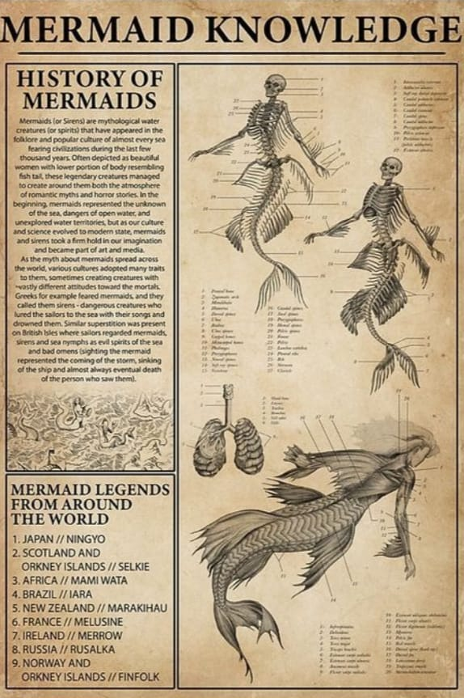
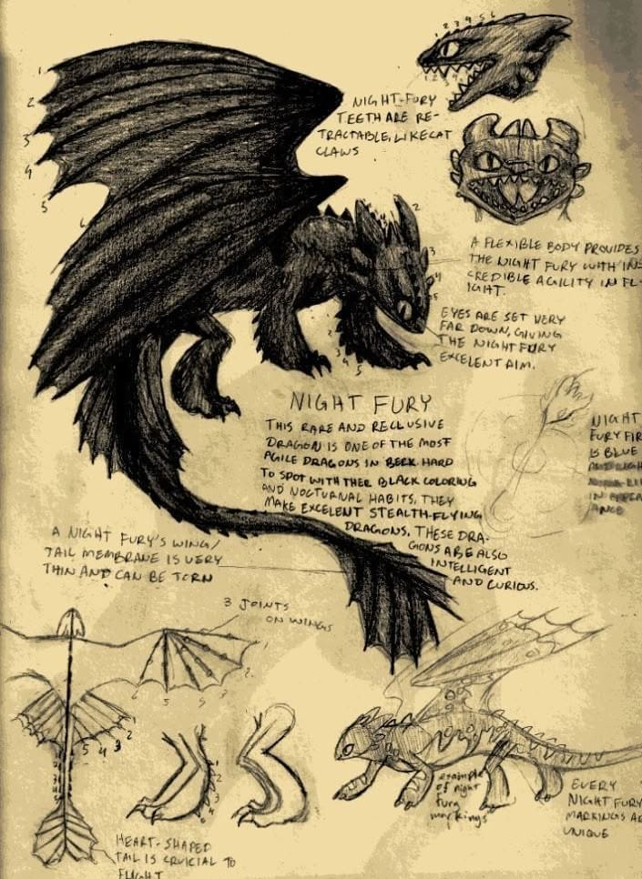
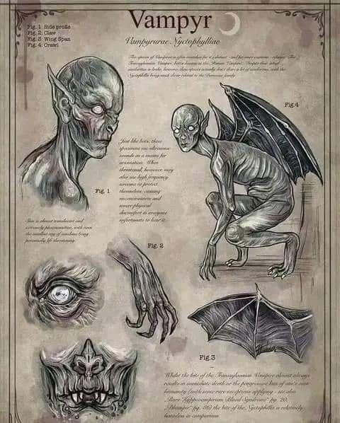
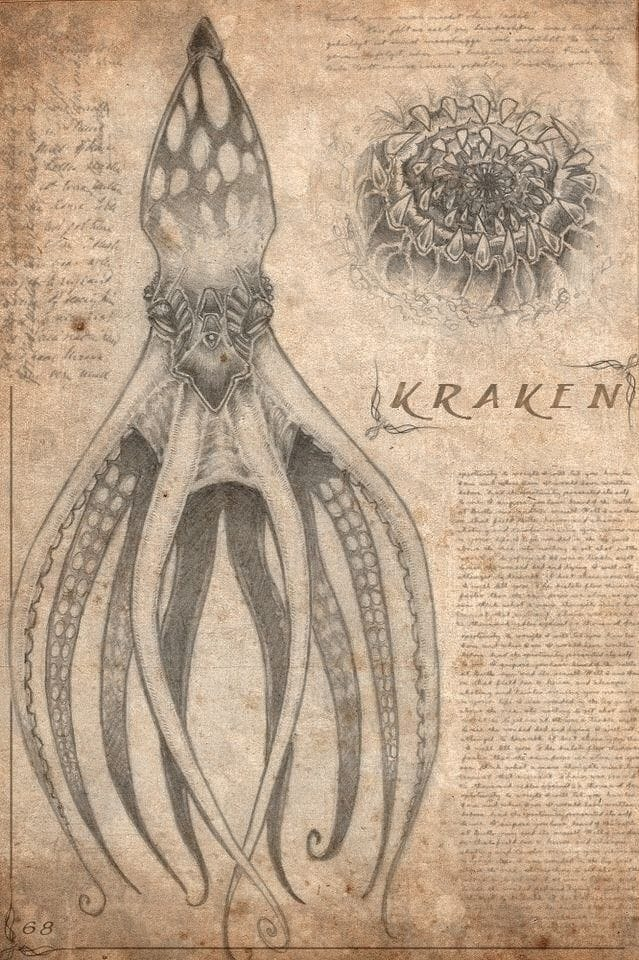
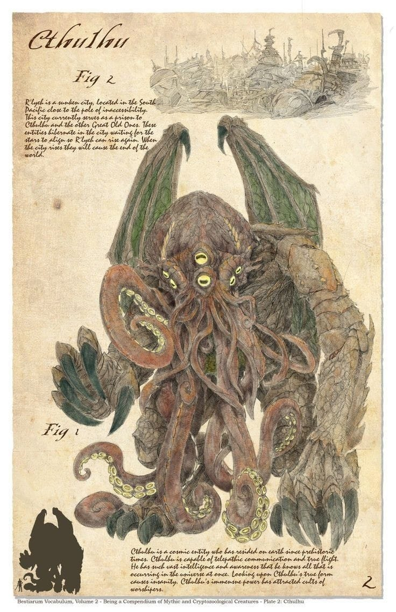

As sereias, criaturas enigmáticas dos oceanos, habitam as profundezas dos mares, onde sua beleza hipnotizante esconde uma natureza tão fascinante quanto perigosa. Dizem que suas vozes encantadoras são capazes de atrair até os navegadores mais experientes para as águas traiçoeiras, onde poucos sobrevivem para contar a história. Algumas lendas falam de sereias sábias, guardiãs de segredos antigos, enquanto outras descrevem seres cruéis que se deleitam com o desespero daqueles que sucumbem ao seu chamado. Seja como aliadas ou inimigas, as sereias permanecem um mistério envolto nas brumas do oceano.

O Fúria da Noite é uma criatura envolta em mistério e temor, mais do que uma simples besta alada — uma entidade que se funde à própria escuridão, tornando-se invisível sob o véu noturno. Seu voo é silencioso, ágil e letal, fazendo qualquer tentativa de fuga inútil para aqueles que cruzam seu caminho. Alguns acreditam que é uma força da natureza, um predador supremo que caça nas sombras, enquanto outros sussurram que é um ser amaldiçoado. Seja mito ou realidade, todos concordam: quando o Fúria da Noite é avistado, poucos vivem para contar a história.

Os vampiros, outrora temidos por sua imortalidade absoluta, agora carregam o fardo da mortalidade, mas sem perder sua essência predatória. Ainda dotados de força, velocidade e sentidos aguçados além da compreensão humana, caminham na linha tênue entre predadores e sobreviventes. O sangue ainda é sua fonte de poder, mas agora também é sua ruína — sem ele, enfraquecem, envelhecem e, eventualmente, perecem. Movendo-se entre sombras e sociedades secretas, persistem não mais como divindades eternas da noite, mas como predadores mortais que lutam para preservar sua linhagem.

O Kraken é uma lenda viva dos mares, um colosso abissal que habita as profundezas insondáveis dos oceanos. Suas gigantescas tentáculos emergem das trevas abaixo, capazes de despedaçar embarcações como se fossem cascas vazias. Marinheiros sussurram histórias sobre olhos tão profundos quanto o próprio oceano e uma inteligência fria que espreita aqueles que ousam desafiar seu domínio. Nos dias de tormenta, alguns dizem que não é a natureza em fúria, mas o despertar do Kraken.

Cthulhu é uma entidade primordial, um horror cósmico que habita além da compreensão mortal. Seu corpo colossal jaz adormecido nas ruínas submersas de R'lyeh, onde sua presença distorce a própria realidade. Diz-se que ele não está morto, apenas sonha, e que seus sussurros ecoam nos pesadelos dos mais sensíveis. Há quem acredite que sua ascensão é inevitável, e quando isso acontecer, o mundo mergulhará no caos absoluto.